1 Introduction
My project aims to implement a movie tracking app based on douban apis and using the crawler to get the download links. The app can browse the latest or the hottest movie brief information and movie charts and so on. Of course, you can get the detail information of the movie. You can also collect movies and download the movie to local.
2 Techniques
1) Java and python programming language skills
2) Mysql DB
3) Android device
4) Linux cloud server
3 Working plan
1) First, get the apis, then fetch and clearing up the data
2) Second, design database for data.
2) Design restful apis for providing local data.
3) Crawler the download link.
3) Design and development of app.
4) Write the document and submit.
这是一款电影信息分享平台，主要从数据源获取数据并进行展示，基于用户系统，数据在服务端可以进行持久化。
1.分层： 展示层， 业务层， 数据层，
2.数据层： 使用豆瓣api获取电影基本数据，使用Springboot构建自己的restapi,提供xml格式的数据，数据使用mysql存储。
3.业务层： 通过客户端的事件响应，从api获取数据并返回，处理业务逻辑
4.展示层： 将数据进入展示。
正在热映(返回json数据)
GET /v2/movie/in_theaters (count=?&start=?)
即将上映(返回json数据)
GET /v2/movie/coming_soon (count=?&start=?)
Top250(返回json数据)
GET /v2/movie/top250 (count=?&start=?)
北美票房榜(返回json数据)
GET /v2/movie/us_box
电影条目信息(返回json数据)
GET /v2/movie/subject/:id (1764796)
添加收藏(自定义接口，返回json数据)
POST /collection (post json数据)
删除收藏(自定义接口，返回json数据)
DELETE /:username/collection/:movie_id
自定义收藏列表(自定义接口，返回xml数据)
GET /:username/collections/
下载链接获取(自定义接口，返回json数据)
GET /search/:moviename(自定义接口，返回json数据)
注册(自定义接口，返回json数据)
POST /register 提交内容username passwd 进行加密处理
登录(自定义接口，返回json数据)
POST /login 提交内容id passwd 进行加密处理
服务端数据库设计
(简单为主)
- user表 username(primary key), password(密文)
- movie_collections 表 username(primary key), movie_id(primary key), data(从豆瓣api获取的json数据)
客户端采用mvp设计模式搭建app, 服务端使用springboot, 数据库使用mysql
<?xml version="1.0" encoding="UTF-8"?>
<xs:schema xmlns:xs="http://www.w3.org/2001/XMLSchema"
targetNamespace="http://www.w3schools.com"
xmlns="http://www.w3schools.com"
elementFormDefault="qualified">
<xs:element name="movie">
<xs:complexType>
<xs:sequence>
<xs:element name="id" type="xs:string"/>
<xs:element name="data" type="xs:string"/>
</xs:sequence>
</xs:complexType>
</xs:element>
</xs:schema>
<?xml version="1.0" encoding="UTF-8"?>
<movies xmlns="http://www.microsoft.com"
xmlns:xsi="http://www.w3.org/2001/XMLSchema-instance"
xsi:SchemaLocation="http://*movie.xsd">
<movie>
<id>1111</id>
<data>{.....}</data>
</movie>
<movie>
<id>1112</id>
<data>{.....}</data>
</movie>
</movies>
1.BaseView 定义baseView
public interface BaseView<T> {
void setPresenter(T presenter);
}
2.BasePresenter 定义basePresenter
public interface BasePresenter {
void start();
}
3.Contract 定义具体接口
public interface Contract {
interface View extends BaseView<Presenter> {
}
interface Presenter extends BasePresenter {
}
}
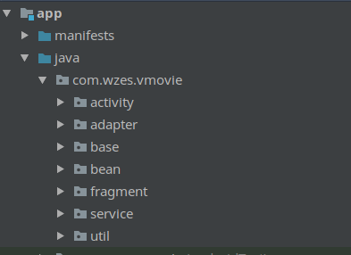
分为七个包
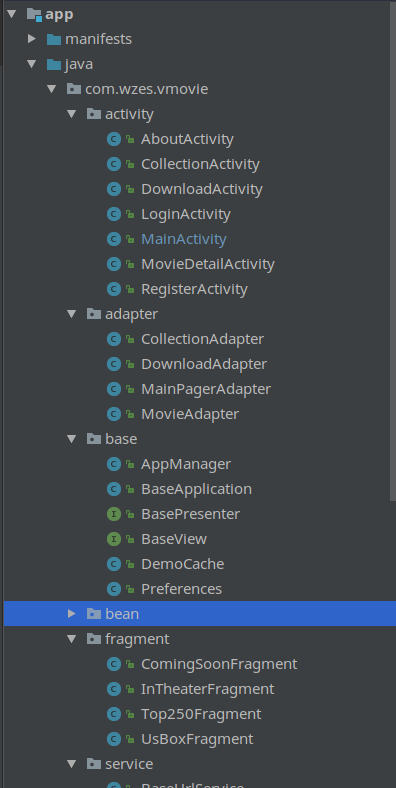
每个包下的实现
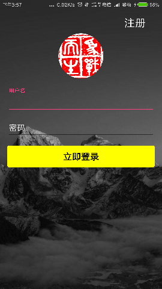 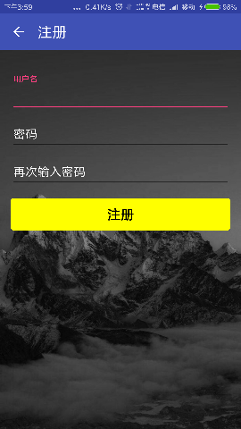 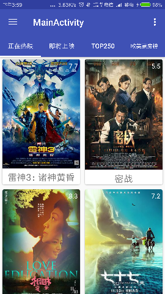 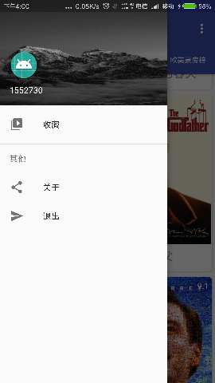 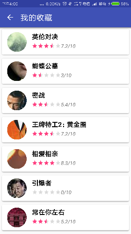 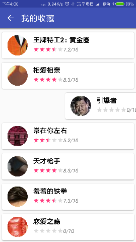 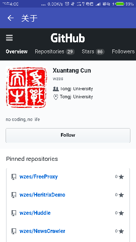 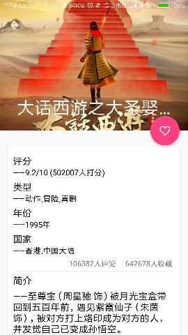 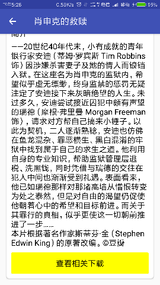 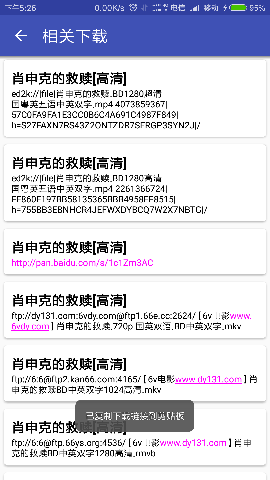
用到的工具
- xml解析工具
dom4j
- http请求库
okhttp
- json解析
fastjson
- 异步
RxJava
- 网络
retrofit
- 图片加载
glide
- 注入
butterknife
- 权限管理
easypermission
- springboot
springboot
- jsoup
jsoup
vmovie.jar 部署在阿里云ECS. vmovie.apk 安装在android手机上